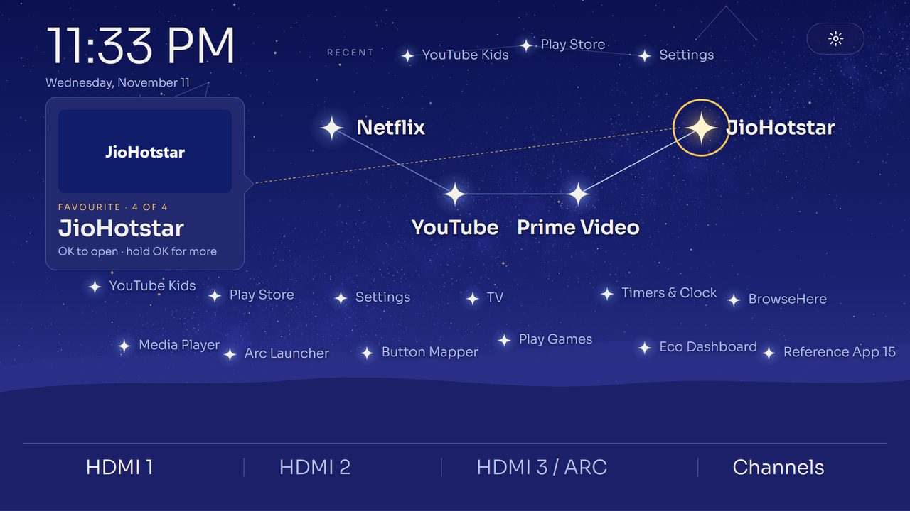

Constellation
Your apps as a night-sky map. Favourites form a bright constellation, other apps are fainter stars, and a three.js sky that can move in depth as you fly from star to star.
three.js sky painted once, then flattened to one picture; stars as focus targets placed by hand.